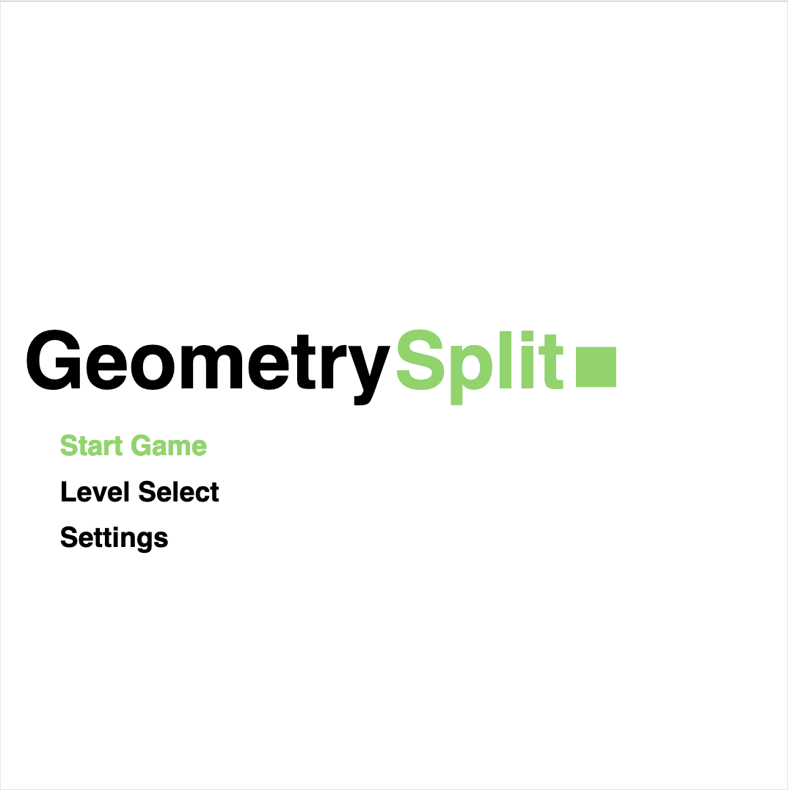
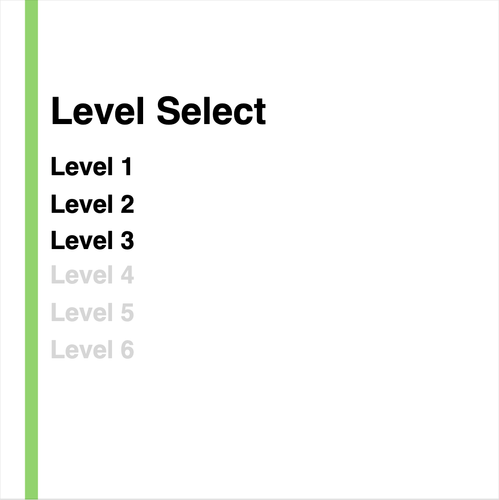
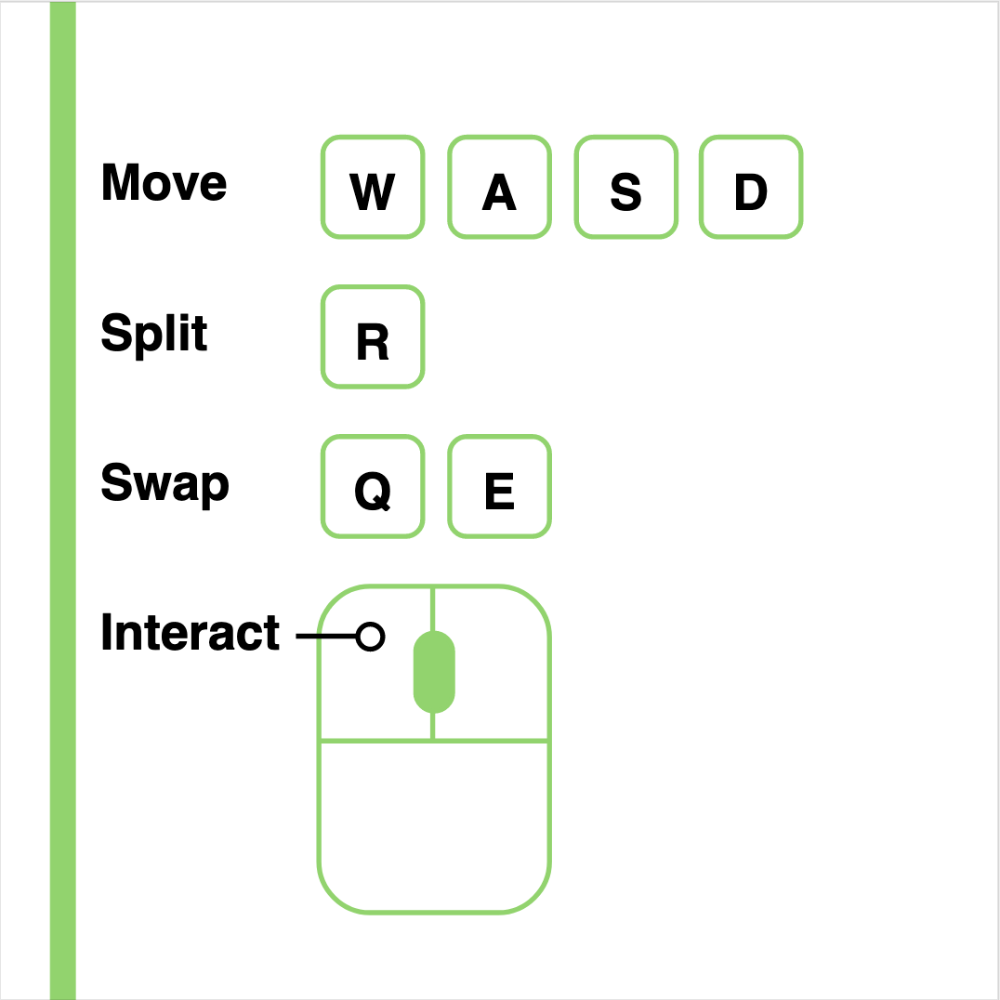
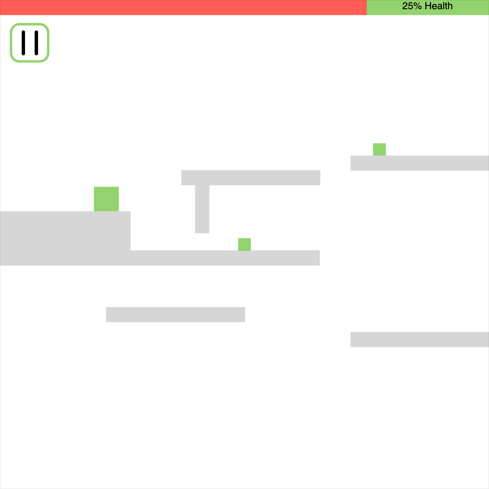
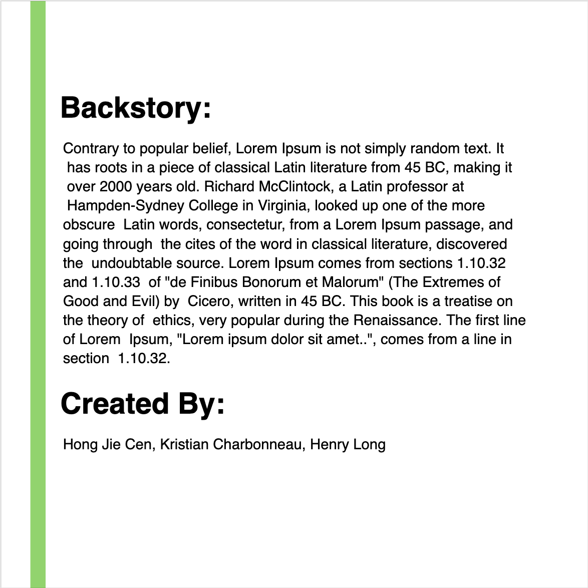

INTRODUCTION
The purpose of this document is to describe GeometrySplit, a game created for CSE380. It is a 2D platformer whose purpose is to combine elements of co-op gameplay into a single player game. This is achieved through the gameplay mechanic of splitting one playable character into multiple.
TECHNOLOGY
GeometrySplit will be playable through a web browser. The core of game will be developed using Phaser, a HTML5 game framework. The levels will be created using the Tiled map editor.
BACK STORY
You are Test Subject 117, the first successful experiment by Incorporated Inc. to inject consciousness into a geometric host. You realize the experiments lead to some nasty side-effects, such as giving you the ability to split up your body. However, you still don’t have the capacity to multitask so your mind can occupy only one “piece” of your body. You decide you need to escape this terrifying geometric world and realize you can use those side effects to your advantage.
OBJECTIVE
The squares goal is to navigate a minimal geometric world. The one catch is he enters a level as a single cohesive square and he must leave it as a single square. Between the start and the end, he can split up into as many small squares as necessary to get to the end zone.
GAMEPLAY
The game will be a 2D platformer and the goal is to get from one end of the level to another. At any point in time, the player can choose to split up the current square into two squares half the size of the original one or merge two equally sized squares into a larger one. The split action can be performed up to 2 times, resulting in a total of 4 playable characters at once to cycle through. The level can only be completed as a single square.
At the beginning of the level, the player will be unable to reach the end without splitting. After splitting, each resulting character will have the opportunity to interact with the environment to open up a path for the other piece(s) of the character. To open up a path all the way to the end of the level for all squares might require splitting more than once.
Along the way the player will encounter enemy squares (red) that will pace back and forth on the platforms. These will also vary in size like the player “pieces” and can only be killed by the player if the player is bigger. Making contact with any of the player squares will kill the square and return the player back to the start of the level.
Player Interactions with the Environment/Level:
- Pressing Button: A player can press down large buttons on the ground. Pushing down a button can open a door or create a platform to jump on elsewhere in the level. This would allow the player to reach parts of the level that were previously unreachable.
- Light Filter: A ray of light that only allows squares of a specific color to get through. To pass through, the player would need to change color.
- Weighted Platform: A platform that will collapse if a square that is too big walks over it. The solution would be to split into smaller squares to pass over the platform.
- Solo Zones: Marked areas that can only be occupied by a single piece of the character at a time.
- Enemies: Can be killed by jumping on them if you’re bigger
- Color Switch: Platform to walk on to switch colors
CONTROLS
The player will be able to move around the currently selected character using W, A, and D, such W would be jump, and A and D would be moving left and right respectively. The player would be able to cycle through any split squares using Q and E to go to next and previous piece, respectively. The R button would allow the player to split into smaller squares. The player would also be able to interact with the environment with the left click.
GRAPHICAL USER INTERFACE
Upon startup of the game, the user would see the title of the game be displayed for a couple seconds and then it would transition into the main menu screen, which would contain the options to start the game, select a level, see the controls, and learn more about the game. The level select page makes only completed levels and the current level available. While the player is playing the game, there should be a pause button. Upon pressing the pause button, the player is given the options to resume, see controls, or return to main menu.
Splash Page
Main Menu
Level Selection
Controls Page
In Game Page
Help Page
ARTWORK
The artwork would consist of colored square sprites representing the player. The tiles will also be single colored. This will give the game a minimalistic look. The player would be able to easily focus on key components of the level.
Sprites needed:
- Player (3 different sizes, 3 different colors, walking, idle)
- Button (pressed and not pressed)
- Enemy (walking and idle)
SOUND EFFECTS
There would be simple sound effects such as clicks to indicate the player’s interactions with the environment. Sound would be a major component in indicating to the player that they either successfully interacted with the environment or that they have made a mistake.
Events that will require a sound effect:
- Splitting
- Merging
- Pressing button
- Changing color
- Dying
- Completing Level
- Platform breaking
- Player landing on platform
- Walking
- Getting killed by enemy
- Killing enemy
MUSIC
To match the art style of the game, the music choice would have to be simple with a few tones. It would have a single layer of music and it would be electronic and at a slow/medium tempo to match the pacing of the game. The music would give a feeling of slow and planned out thoughts..